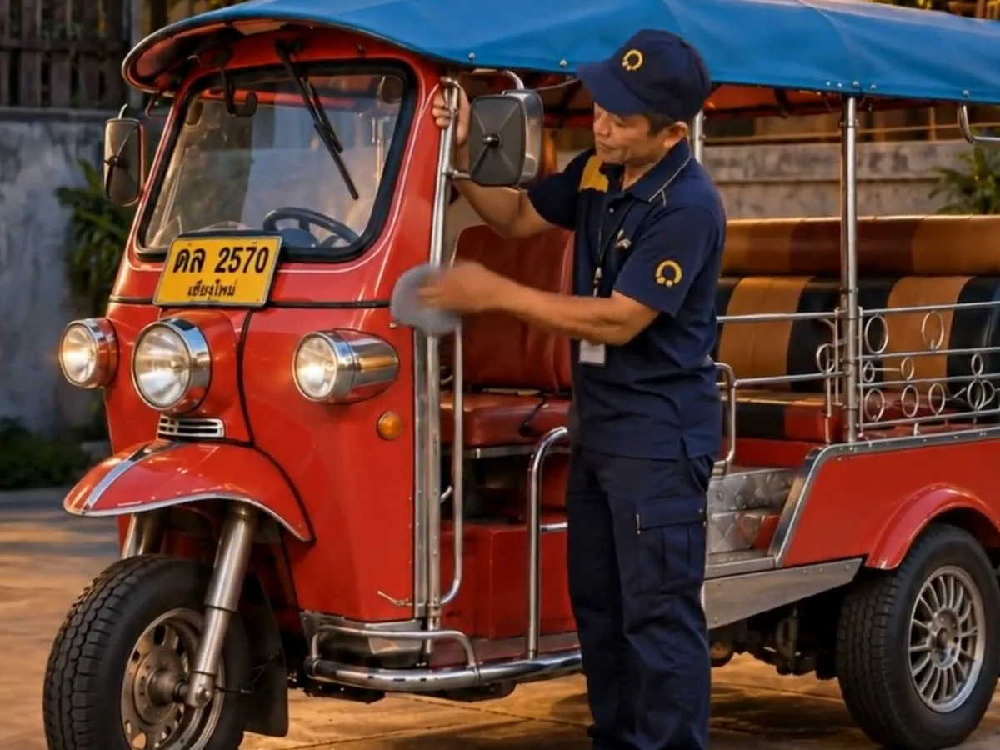
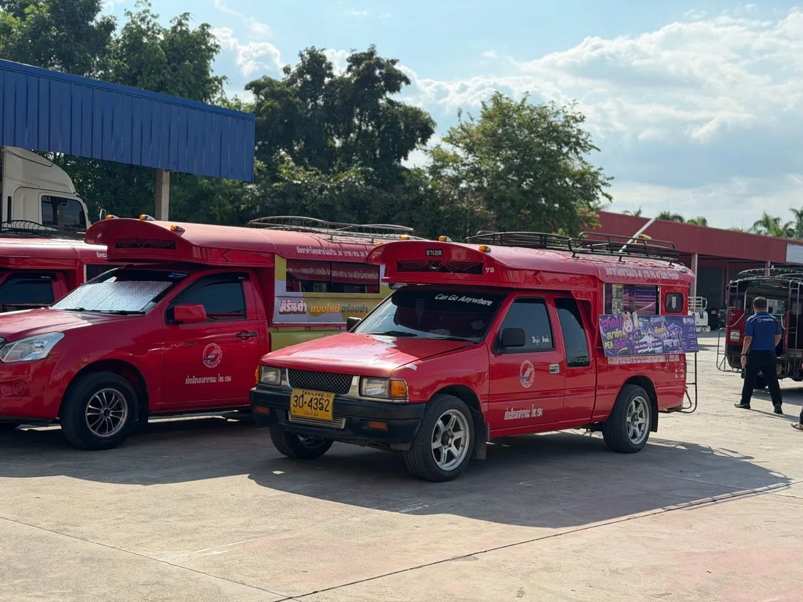
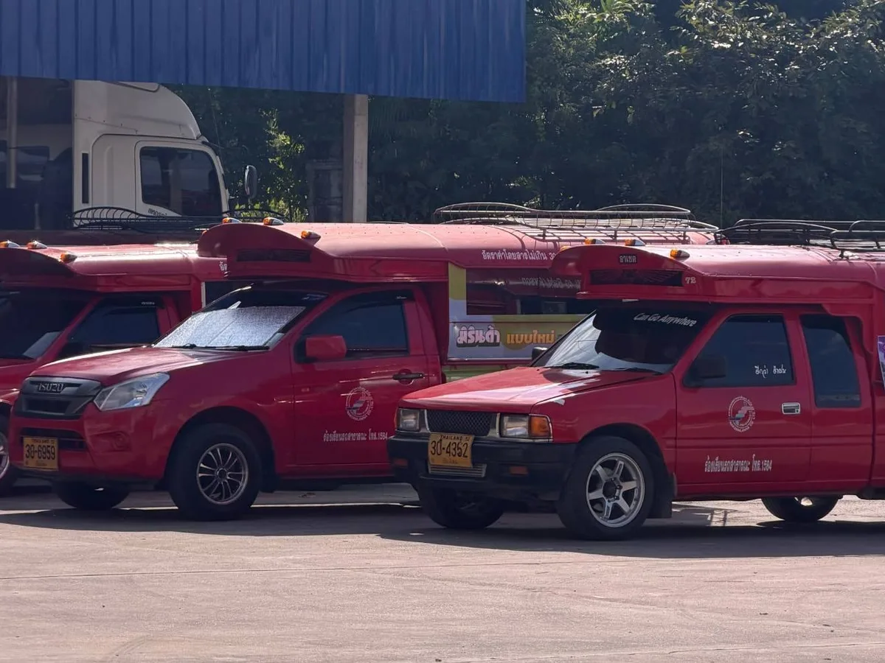
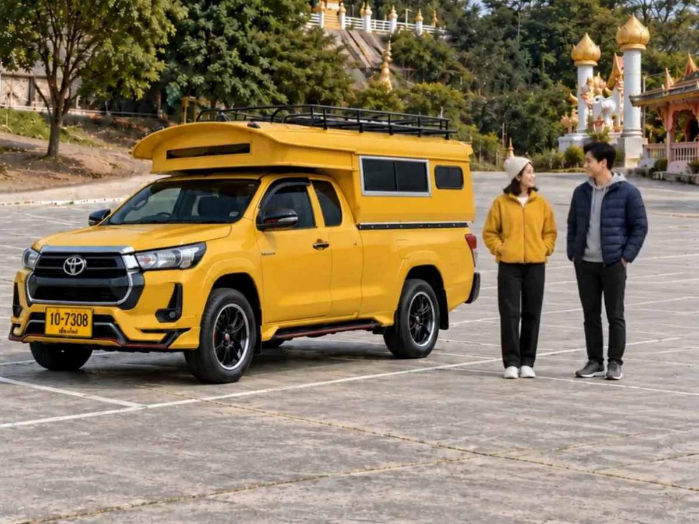
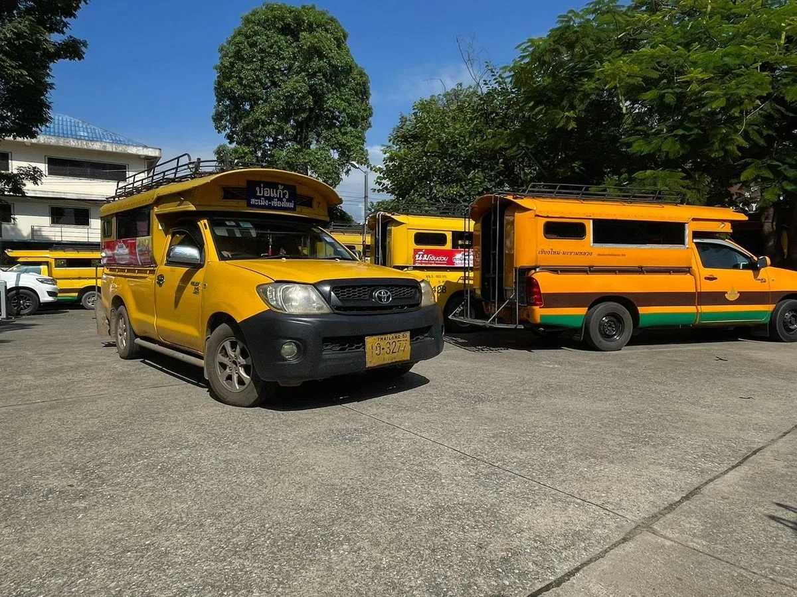
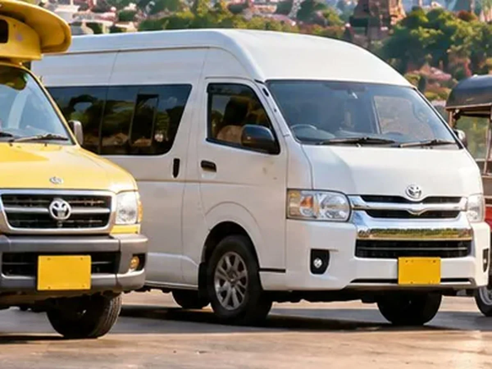
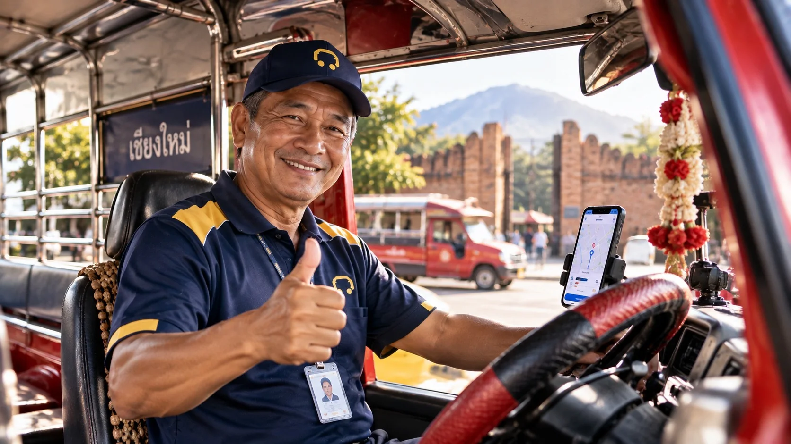
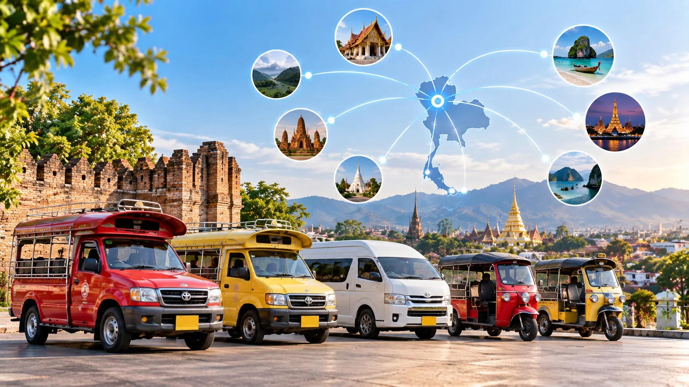

1–3 ที่นั่งสามล้อ · ตุ๊กตุ๊ก
คล่องตัวในเมืองเก่าและซอยเล็ก เรียกทันทีหรือจองล่วงหน้าก็ได้
เริ่ม 80 บาทในเมือง เที่ยวเดียว · สนามบินเริ่ม 100 บาท

เรียกสามล้อ รถแดง และสองแถวจากคนขับรถสาธารณะที่มีใบอนุญาตจริง หรือเลือกทริปเที่ยวในเมืองและขึ้นดอย ราคาแสดงก่อนยืนยัน และล็อกทันทีเมื่อจอง

นั่งรวมคนละ 180 บาท จากคิวรถวัดน้ำตกแม่กลาง ออก 05:00 น. · เหมาสองแถวเหลืองจอมทอง → ดอยอินทนนท์ 1,800 บาทต่อคัน นั่งได้ 10 คน · หรือทริปเต็มวันรับถึงที่พักในเมือง ราคาเดียวกับในแอป voyiro
เลือกตามจำนวนคนและเส้นทาง ราคาต่อคันไม่คิดตามจำนวนคน และเห็นก่อนยืนยันทุกครั้ง

1–3 ที่นั่งคล่องตัวในเมืองเก่าและซอยเล็ก เรียกทันทีหรือจองล่วงหน้าก็ได้

นั่งรวม ต่อคนภาพจากพื้นที่จริงวิ่งตามเส้นทางที่สหกรณ์กำหนด รถออกเมื่อผู้โดยสารครบคัน

1–10 ที่นั่งภาพจากพื้นที่จริงเที่ยวในวงแหวนรอบ 2 จองล่วงหน้า 24 ชั่วโมง โดยสหกรณ์นครลานนาเดินรถ จำกัด

1–10 ที่นั่งคิวรถจอมทอง ขึ้นดอยอินทนนท์ นั่งรวมหรือเหมาคันก็ได้

ประจำทางภาพจากพื้นที่จริงvoyiro ช่วยจองที่นั่งและบอกว่ารถถึงไหนแล้ว ไม่เก็บเพิ่มจากค่าโดยสาร

เร็วๆ นี้สำหรับกลุ่มใหญ่ สัมภาระเยอะ และเส้นทางข้ามจังหวัด กำลังเปิดรับสหกรณ์เข้าร่วม
ราคาเริ่มต้นโดยประมาณ ใช้ประกอบการตัดสินใจเท่านั้น ราคาที่ผูกพันคือราคาที่แสดงในหน้ายืนยันก่อนเรียกรถ
ทุกบริการใช้บัญชี คนขับ การชำระเงิน ความปลอดภัย และระบบแบ่งรายได้ชุดเดียวกัน

สามล้อ รถแดง และสองแถว เรียกทันทีหรือจองล่วงหน้า ราคาชัดก่อนขึ้น
วิธีเรียกรถ
ทริปในเมืองและขึ้นดอย ราคาต่อคัน สามล้อ 1–3 คน รถแดงและสองแถว 1–10 คน รับถึงที่พัก
ดูทริป
โรงแรม ร้านค้า และบริษัททัวร์ เรียกรถและขายทริปให้ลูกค้า มีรายได้จากทุกงานที่ส่งผ่านบัญชีของตัวเอง
สำหรับพาร์ตเนอร์
พัสดุ เอกสาร ของด่วน ส่งด้วยเครือข่ายคนขับที่รู้จักเมือง ติดตามสถานะได้ ค่าบริการชัดเจน

voyiro ไม่นำรถส่วนตัวมาแข่งกับรถสาธารณะ เราพาเทคโนโลยีไปให้คนขับที่ถูกกฎหมาย และให้สหกรณ์เป็นผู้ดูแลสมาชิกเอง

รถท้องถิ่นแต่ละพื้นที่ยังคงเอกลักษณ์ของเมือง voyiro เพิ่มมาตรฐานที่มองเห็นและตรวจสอบได้ ตั้งแต่ภาคเหนือถึงประเทศเพื่อนบ้าน
คนขับ ทีมภาคสนาม และพาร์ตเนอร์ ใส่ยูนิฟอร์ม voyiro พร้อมบัตรที่ตรวจสอบได้


จุดรับรถ ป้ายไทย–อังกฤษ และบูธช่วยเหลือที่เข้าถึงได้ทุกคน รวมถึงผู้ใช้วีลแชร์

สหกรณ์เดินรถ โรงแรม และบริษัททัวร์ ร่วมโครงการนำร่องได้โดยไม่มีค่าแรกเข้า
ภาพบุคคล สถานที่ รถ และยูนิฟอร์มในหน้านี้เป็นภาพประกอบแนวคิด